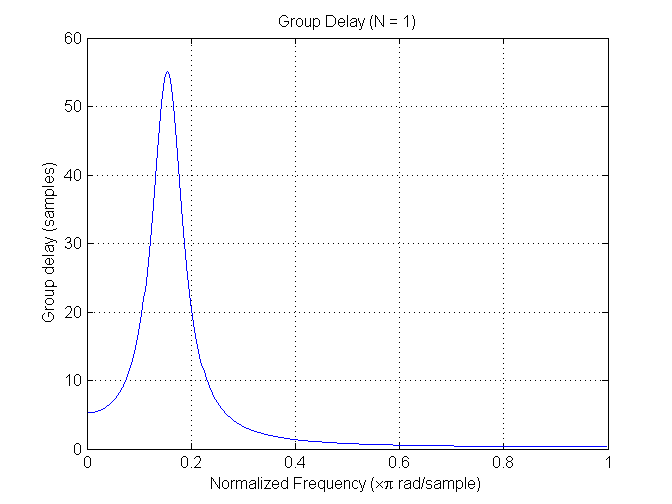

Contents
clear all; close all; clc;
load projIA.mat;
Part 1 (N = 1)
figure;
freqz(b,a);
title('Frequency Response (N = 1)');
figure;
impz(b,a,100);
title('Impulse Response (N = 1)');
figure;
zplane(b,a);
title('Pole-Zero Plot (N = 1)');
figure;
grpdelay(b,a);
title('Group Delay (N = 1)');
new = filter(b,a,speech);
soundsc(speech,fs);
soundsc(new,fs);

Part 2 (N = 50)
new2 = filter(b,a,speech);
for k = 1:49
new2 = filter(b,a,new2);
end
[H,w] = freqz(b,a);
AH = H.^50;
H = abs(H).^50;
H = H/max(H);
P = angle(AH);
g = [1 zeros(1,4999)];
f = filter(b,a,g);
for k = 1:49
f = filter(b,a,f);
end
figure;
subplot(2,1,1);
plot(w,H);
title('Frequency Response (N = 50)');
xlabel('Normalized Frequency (xpi rad/sample)'); ylabel('Magnitude (dB)');
subplot(2,1,2);
plot(w,P);
xlabel('Normalized Frequency (xpi rad/sample)'); ylabel('Phase (degrees)');
figure;
stem(f);
title('Impulse Response (N = 50)');
xlabel('n (samples)'); ylabel('Amplitude');
figure;
[gd,w] = grpdelay(b,a);
gd = 50*gd;
plot(w,gd);
title('Group Delay (N = 50)');
xlabel('Normalized Frequency (xpi rad/sample)'); ylabel('Group delay (samples)');
soundsc(speech,fs);
soundsc(new2,fs);